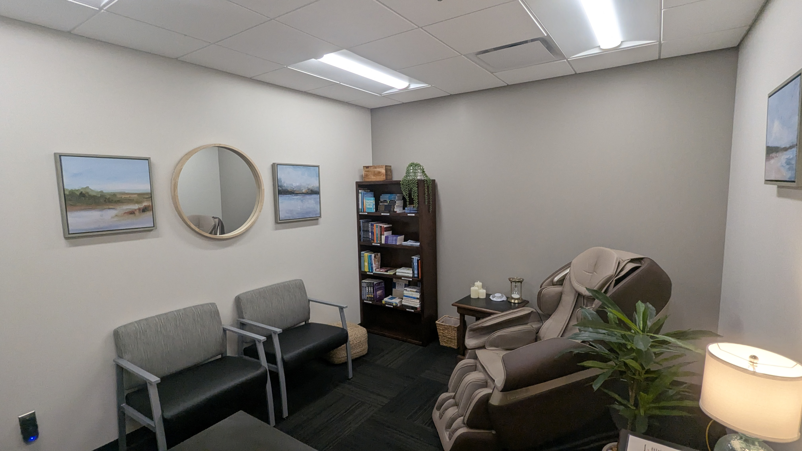

Mental & Emotional Wellness
Supporting access to confidential professional resources, resilience-building opportunities and programs that encourage officers to seek support when needed.
Supporting the mental, physical and emotional well-being of the men and women who serve our community.
Supporting the whole person who serves our community.
Law enforcement professionals face unique physical and emotional demands. The Foundation helps strengthen resources that promote resilience, recovery and long-term well-being.
Wellness means creating multiple pathways that support officers throughout the physical, emotional and cumulative demands of a law-enforcement career.
Supporting access to confidential professional resources, resilience-building opportunities and programs that encourage officers to seek support when needed.
Helping expand resources that support fitness, recovery, nutrition and sustainable healthy habits for the demands of police work.
Supporting tools and resources that help personnel recover after critical incidents, manage cumulative stress and maintain long-term well-being.
Real spaces and resources within the department designed to support healing, recovery and readiness.

Private professional care and a dedicated place to talk.

Quiet space and tools to reset and refocus.

A recovery resource that supports physical readiness.

Targeted relief and resources that support daily wellness.

A comfortable space for confidential support and decompression.
Every contribution to the Jeffersontown Police Foundation can help strengthen wellness resources that support officers as they heal, recover and continue serving with resilience.
Support Wellness Today